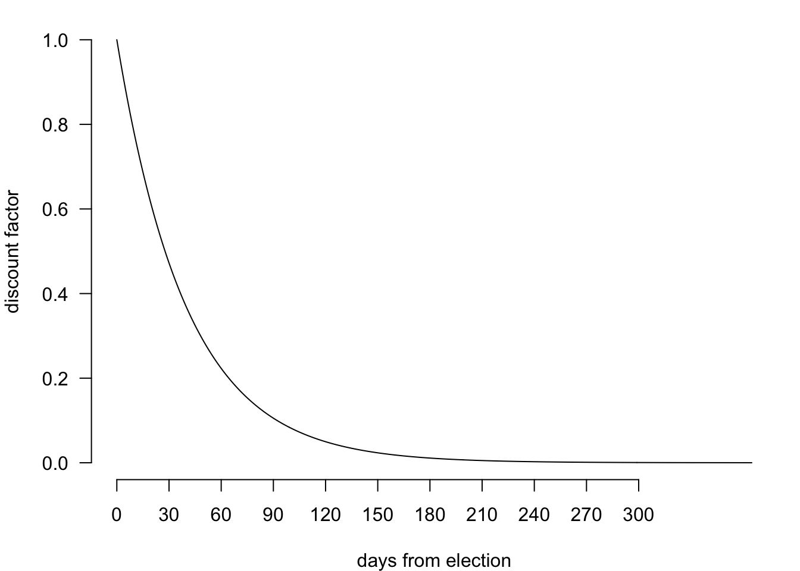

Yapa is a simple poll aggregator that combines polls with previous election results to estimate state-level support for US presidential candidates and simulate potential electoral college outcomes.
Yapa starts with previous election results as a baseline estimate for candidate support in each state. As state and national polling data become available it updates that estimate, adjusting for poll sample size and recency, and accounting for swings in the national popular vote. In states with few recent polls, or many polls with very different results, there will be considerable uncertainty around these poll averages. In states with many recent polls that mostly agree, the uncertainty will be lower.
Once it has estimated poll averages, Yapa then runs tens of thousands of simulations to generate distributions for national and state-level support for each candidate. In each simulation, it considers the possibility of systematic polling error — e.g., state polls underestimate support for the Democrat by 1% on average — and generates an election result based on that possibility. The estimates for systematic error are based on their historical distributions, and are rarely outside the range of 1-2%. However, if poll averages in many states are close, that systematic polling error can be an important factor in the outcome.
Yapa models support for each presidential candidate with three layers:
Specifically, the number of respondents that support each candidate in each poll \(y_{p, c}\) is drawn from the total respondents in that poll \(n_p\) at a candidate and state specific polling average \(\theta_{s, c}\). The polling averages follow a normal model centered on previous election results for each candidate in each state, adjusted by trends in current national polls \(\alpha_{s, c}\). In the absence of state level polling, \(\alpha\) stands in as the best available estimate. The election outcome \(\mu_{s, c}\) is simulated from a distribution centered at the estimated polling average for each candidate in each state, with a candidate specific national swing \(\epsilon_{c}\) and state specific deviation \(\sigma_{s}\). \(\epsilon\) is estimated from historic swings in the previous three elections, taking careful account for correlations across candidates. If a candidate outperforms the polls, another usually underperforms; and if a candidate outperforms in one state, they are likely to outperform in other states too. \(\sigma\) is estimated from historical polling errors in each state.
\[ \begin{align} y_{p, c} &\sim Binomial(n_p, \theta_{s, c}) \\ \theta_{s, c} &\sim Normal(\alpha_{s, c}, \tau) \\ \mu_{s, c} &\sim Normal(\theta_{s, c} + \epsilon_{c}, \sigma_{s}) \\ \epsilon_{c} &\sim MultiNormal(M, \Sigma) \end{align} \]
All code and data are available at github.com/alexpavlakis/yapa. Polls are pulled from 538 and RealClearPolitics.
Polls tend to contribute more to final inferences if they have a) larger sample sizes and b) are closer to the election. We discount polls by recency according to the exponential decay model:
\[ discount_p = e^\frac{-days\_out_p}{\gamma} \]

A rough rule of thumb is that a poll seven days from the election will get about twice as much weight as a poll seven weeks from the election. Polls more than three months out get very little weight, and will contribute little to inferences when there are polls closer to the election.